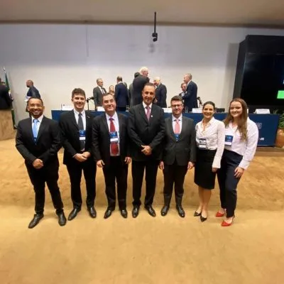
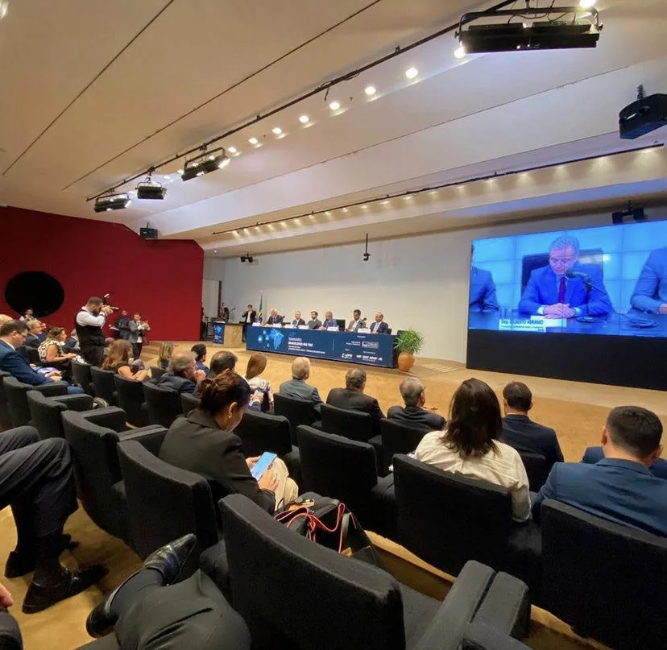

23ª Edição do Seminário Brasileiro de Transporte Rodoviário de Cargas
No último dia 8 de maio, o auditório Nereu Ramos, em Brasília (DF), foi palco da 23ª edição do Seminário Brasileiro de Transporte Rodoviário de Cargas. O evento, que contou com a presença dos nossos sócios, Dr. Jeferson Costa e Dr. Reinaldo Lage, reuniu especialistas e profissionais do setor para discutir questões cruciais que afetam a indústria de transporte rodoviário de cargas no Brasil.
Entre os temas de destaque abordados ao longo do seminário, a reforma tributária e seus impactos no setor despontaram como pontos cruciais de discussão. Com as constantes mudanças no cenário tributário nacional, compreender as implicações e adaptar-se às novas normativas torna-se essencial para as empresas de transporte rodoviário de cargas.
Além disso, a desoneração da folha de pagamentos foi outro assunto de relevância discutido durante o evento. A medida, que visa reduzir os encargos trabalhistas para as empresas, tem potencial para impactar significativamente o setor de transporte rodoviário de cargas, influenciando diretamente em aspectos como custos operacionais e competitividade das empresas.

A participação ativa dos nossos sócios, Dr. Jeferson Costa e Dr. Reinaldo Lage, evidencia o compromisso da nossa empresa em se manter atualizada e engajada nas discussões e tendências que moldam o cenário do transporte rodoviário de cargas no país. Estar presente em eventos como o Seminário Brasileiro de Transporte Rodoviário de Cargas reforça nosso comprometimento em oferecer soluções cada vez mais eficientes e alinhadas com as demandas e desafios do mercado.
Em um contexto em constante evolução e transformação, é fundamental que os profissionais e empresas do setor estejam atentos às mudanças e se engajem ativamente em iniciativas que promovam o desenvolvimento sustentável e aprimorem a eficiência operacional do transporte rodoviário de cargas no Brasil. A participação no Seminário Brasileiro de Transporte Rodoviário de Cargas representa mais um passo nessa direção.

Fique por dentro de conteúdos importantes seguindo nossas redes sociais! Clique aqui para acessar.
Paulo Teodoro – Advogados Associados